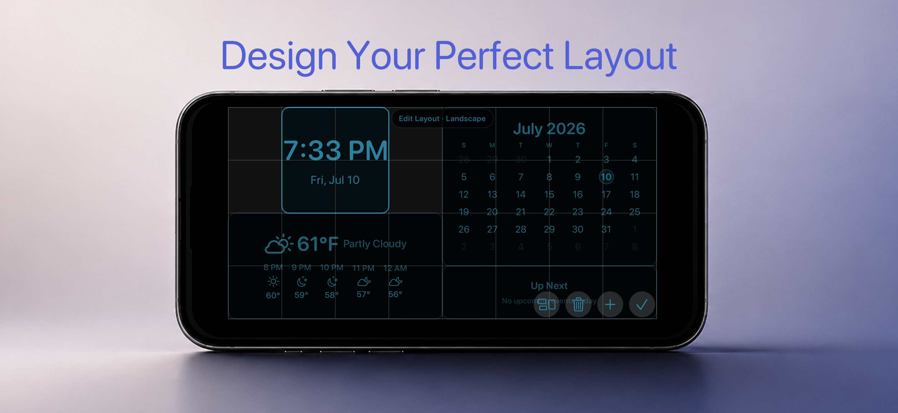
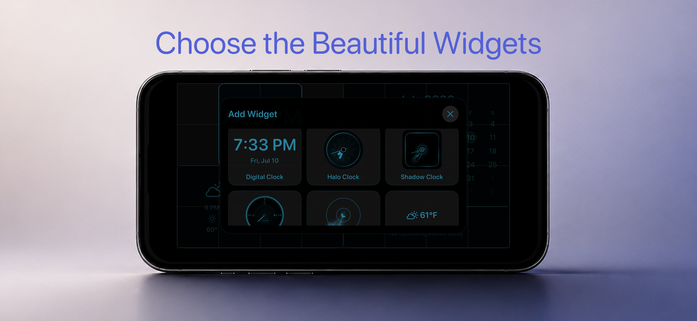

Make the layout yours
Choose clock styles and arrange widgets for the screen you want in portrait or landscape.
Persistent. Glanceable. Yours.
AlwaysOn Desk Clock keeps time, calendar, weather, and what is next within a glance — with customizable layouts designed for a plugged-in desk or nightstand.

Built for the background
Pick the information you care about, arrange it for your space, and let the display settle into the room.
Choose clock styles and arrange widgets for the screen you want in portrait or landscape.
See the date, monthly calendar, and upcoming calendar events without opening another view.
Use Apple WeatherKit to show current conditions and the near-term forecast when Location access is enabled.
Set display hours and use subtle color transitions that keep the screen feeling alive without demanding attention.
Customize the view
Use edit mode to arrange the screen, then choose from widgets that keep the right details visible.


Support
Questions, feedback, or a bug report are welcome. Include your iPhone model and iOS version when they are relevant.